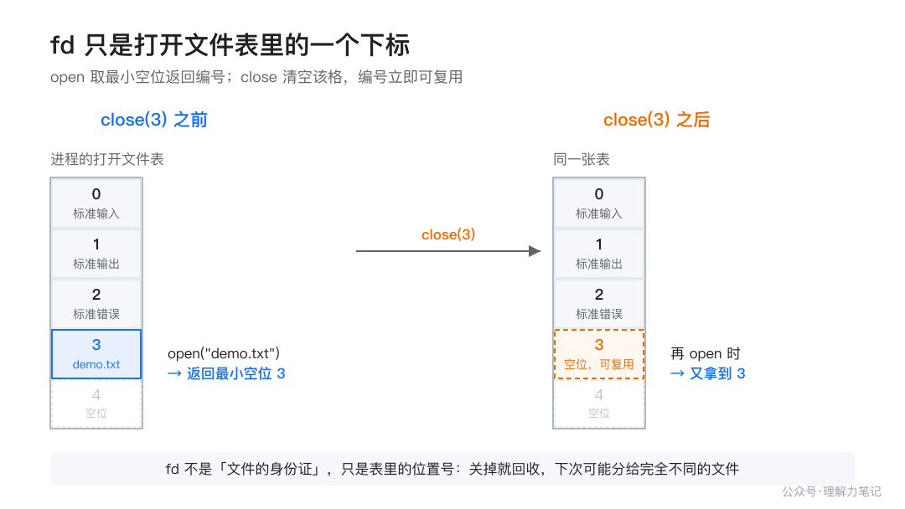
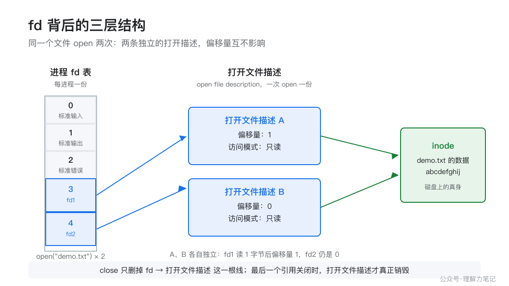

这篇文章怎么读？
无论你为什么点进来，都能各取所需——只解决手头问题，看第一章就够；想彻底搞懂，再往下读。
| 你是谁 | 看哪一章 | 会得到什么 |
|---|---|---|
| 搜索者 / 被推荐者 | 第一章 · 先解决问题 | 最快的答案（知其然） |
| 学习者 | 第二章 · 机制解释 | 底层的来龙去脉（知其所以然） |
| 编程者 | 第三章 · 工程使用 | 正确、能直接用的写法 |
| 求职者 | 第四章 · 面试提炼 | 会怎么问、怎么答（按需） |
你八成写过这样的代码：
这里有个问题，多数人从没认真想过：open 返回的那个整数 fd，它到底是什么东西？close(fd) 之后，又发生了什么？
结论：
fd不是一个「文件」，它只是进程内一张打开文件表里的一个下标。open返回的是当前最小的、还没被占用的编号；close只是把表里这一格清空，让它重新可用，并不立即销毁文件对象。真正销毁文件对象（释放内核里对应的数据）要等到最后一个指向它的引用被关闭。
下面用两个能自己跑的小实验，把这件事验证清楚，再讲清它背后到底发生了什么。
一句话说清：open 成功时，内核挑一个当前最小的、没被占用的整数发给你，这就是 fd。close(fd) 把这个编号还回去，之后你（或别人）再 open，很可能又拿到同一个编号。
下面这段代码，先关掉标准输入（fd 0），再连续打开同一个文件两次，最后关掉一个再开一次，看编号怎么变。
fd1 = 0, fd2 = 5
close(0) 后再 open，拿到 fd = 0
两件事被证实了：
close(0) 之后第一次 open，拿到的是 0——编号是按「最小的没被占用的」来分配的，不是一直往上加。close(fd1) 之后再 open，又拿到了 0——刚释放的编号立刻就能被复用。（第二行 fd2 = 5 也印证了规则：编号 1、2 是标准输出和标准错误，本机 macOS 的运行时在启动阶段又占了 3、4，所以第二次 open 只能拿到 5。在 Linux 上，同样的代码一般会依次拿到 0、3。具体编号因平台而异，「最小未用编号」这条分配规则两边一致。）
一个很容易错的判断：不要以为 fd 是「文件的身份证」。它不是。它只是一个表里的位置号，关掉之后这个位置就被回收，下次可能分给一个完全不同的文件。

为什么 close 一个编号，不等于销毁文件？因为 fd 根本不是文件本身，它只是指向文件的一根「线」。Linux 里，这根线牵着三层东西。

open/close 直接操作的「表」。open 产生的、独立的一份记录，里面存着文件偏移量、访问模式（只读/只写/读写）、状态标志。这个才是「你打开的那份文件」。关键在于中间那层。每次 open 都会新建一个独立的 open file description，所以同一个文件打开两次，会得到两个偏移量互不相干的「打开描述」。
open 时：内核解析路径找到 inode → 新建一个 open file description（偏移量设为 0）→ 在进程 fd 表里找一个最小空位，把指向它的指针填进去 → 返回这个空位的下标。
close 时：内核把 fd 表里这一格的指针抹掉（这一格立刻空出来，可复用）→ 检查还有没有别的 fd 指向同一个 open file description → 如果这是最后一个引用，才真正释放它；如果不是，就什么都不动。
这就是「引用计数」：一个 open file description 被几个 fd 指着，计数就是几。close 一次减一，减到 0 才销毁。
open 返回 -1 是出错，具体原因看 errno：文件不存在是 ENOENT，没权限是 EACCES，进程打开的文件太多（超过 RLIMIT_NOFILE 上限）是 EMFILE，整个系统文件句柄耗尽是 ENFILE。close 返回 0 成功，-1 失败。但有个反直觉的坑：在 Linux 上，close 出错时这个 fd 其实已经被释放了。后面第三章专门讲。「每次 open 都新建独立的打开描述」这句话不能只靠说，用一个 10 行的实验验证：同一个文件 open 两次，各读 1 个字节，看两个 fd 的偏移量是否互不影响。
文件内容是 abcdefghij，实际输出：
fd1 read 1 byte: 'a'
fd2 read 1 byte: 'a'
fd1 offset = 1, fd2 offset = 1
两个 fd 各自读了第 1 个字节、偏移量都是 1。如果它们共享同一个打开描述，fd2 读到的就该是 b、偏移量是 2。实验证明：同一文件 open 两次，得到的是两份独立的打开描述。这也解释了为什么多线程程序里，两个线程各自 open 再各自读写，互不干扰。
open；需要「以某个目录为基准解析相对路径」时用 openat（比如打开目录下另一个文件、避免路径竞争），传 AT_FDCWD 时行为和 open 完全一致。O_CLOEXEC 标志，而不是事后靠 close 补救。三个容易踩的坑，都来自 close 的「怪异」语义：
close 的返回值要检查。 写数据时的错误，有时要推迟到「最后一次 close 释放 open file description 时」才报出来，尤其 NFS 和磁盘配额场景。不检查 close 的返回值，可能静默丢数据。
close 失败后，不要重试。 在 Linux 上，内核在 close 的一开始就已经把 fd 释放了（让它可复用），后面可能报错的部分（比如把数据刷到磁盘）发生在更晚的步骤。所以 close 返回 -1 时，这个 fd 大概率已经失效了。此时再 close(fd) 一次，很可能会把另一个线程刚分配到的、编号相同的新 fd 给误关掉。
close 被信号中断（EINTR）怎么办。 这是最麻烦的一个。POSIX 说「close 被信号中断时，fd 状态未指定」，Linux 的实际行为是「fd 保证已经关闭」。所以 Linux 上你不能因为 EINTR 就去重试 close，否则就是上面第 2 条的误关竞态。真要重试，得先确认这个 fd 确实还开着，而这本身几乎不可能安全做到——结论就是：close 一旦被调，就别再碰这个编号。
一个「关掉并顺手把变量置为无效」的小习惯，能避免一半的 use-after-close：
把 fd 存到变量里而不是到处传递裸整数，并养成「关完就置 -1」的习惯，能让代码在出错路径上也清晰。
「fd 是进程打开文件表的下标。open 返回最小的未用编号；close 把这一格清空并让编号可复用，但底层文件对象只有在最后一个引用关闭时才销毁。Linux 里是 fd 表 → open file description → inode 三层结构。」
fd 和 FILE * 有什么区别？ fd 是内核给的整数句柄，FILE * 是 C 标准库在它之上包的一层缓冲流。FILE * 内部持有一个 fd，可以 fileno() 拿到。close 的返回值——写错误可能恰恰在最后一次 close 时才暴露。留一个小练习：把本文实验里的 close(0) 改成 close(2)（关掉标准错误），再运行一遍，看看两次 open 分别拿到什么编号。如果你能根据「最小未用编号」规则预测出结果，这一篇就算真正读懂了。
按支撑程度排序：
本文为公众号「理解力笔记」原创。转载请联系作者，并保留出处。